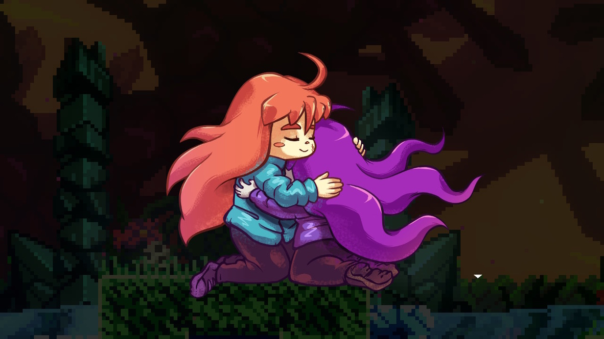
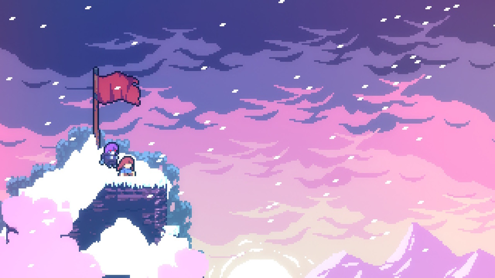
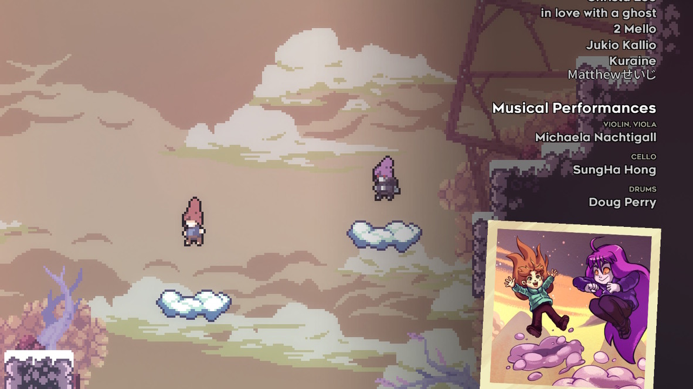

珍宝记录馆
Table of Contents
1 蔚蓝 游戏
剧情温馨，和标准的打坏人故事不一样，蔚蓝讲的是主人公挑战雪山，梳理自己的心理问题和自己和解，和有趣的人互动，比打坏人高多了。当然剧情有点老套，打到第二章基本就知道后面剧情了；但是这样其实更好，老套也意味着王道：王道剧情，best剧情。
完成度高，游戏内容扎实，细节丰富而且很精致，比如可爱的配音会随着人物心情变换音调，停在悬崖边会有很小心的姿势，跑和攀爬的时候会冒汗，很可爱。Madeline，黑化Madeline和Theo的对话也不少，而且都很有趣（拼命截图）。
画面很漂亮，尤其是在雪山山脊上，背景的夕阳很美。配乐也很好，我这种乐盲也说不出来啥（其实是忙着死和看夕阳还有舔cp，没有认真听）。
难度适中，有挑战性但不是故意虐人，重要的是容错率挺高，不需要极限操作。首先大部分机关的窗口都比较大，不会差了几个像素或者零点零几秒就过不了，其次这些机关也不太需要反应能力很强，没有很多随机的东西。作者甚至还加入了一些保姆设定，比如即使跑出了平台边缘才跳，只要差不多也算成功。
跳跃移动的手感也很好，之前看了个视频讲开发者的一些思路，手感和容错率这方面他们挺重视的，最终效果也的确很舒服（对比马里奥兄弟的溜冰手感）。
最后，Madeline和黑化Madeline都好可爱啊啊啊。黑化出场的时候Darling Darling的，呜呜呜受不了。为了不剧透我就不多说了，总之后面越来越棒www Theo大哥也很酷，好想认识这样的人www （当然还有个人我没提，我没提说明他是个sb，我就说这么多。）
  2 高分少女 动画

这两天看了高分少女。真的超棒！儿时因为游戏产生的缘分，主角给大野灰色的生活带去了色彩。到后面大野一直把主角当作心灵的支撑，一直挂着项链。每次拿出来都直击心灵。到高中时他们一起回忆以前在一起的经历，一起跑出去玩，一起打双人游戏。真的好甜好可爱。大野超可爱！其他配角也一直都在，宫野在初中认识，星星男初中不在，高中又分到一起，这种朋友们一起成长一直在一起的感觉超温馨。他们也都是很可爱的人。
小春在圣诞节的时候开始注意主角，后面慢慢开始喜欢的样子也超可爱啊。“我想在你后面看你玩”超超可爱啊！大野和小春各种小动作都超超超可爱啊啊啊。比如大野一口气吃两个棒棒糖，小春说“没什么”，还有其他很多。小春要拉主角过夜的时候超色情啊，怎么这么可爱，监督和原作都好会啊可恶。主角让小春哭了这么多次真是罪大恶极。
第一季ed描述大野的心情也超可爱的。第二季ed最后那个粗点心屋里他们曾经一起玩的游戏机，真让人感动。
人类美好的情感，来自于现实但现实中难以得到的美好的情感，在动画里一口气给个够。真羡慕动画里的人啊。